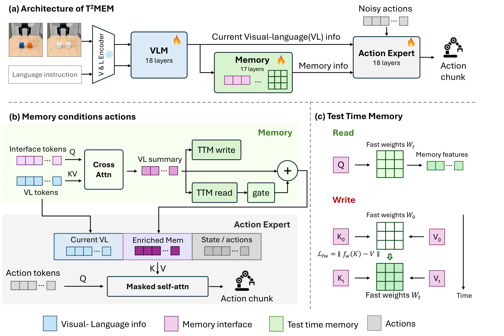
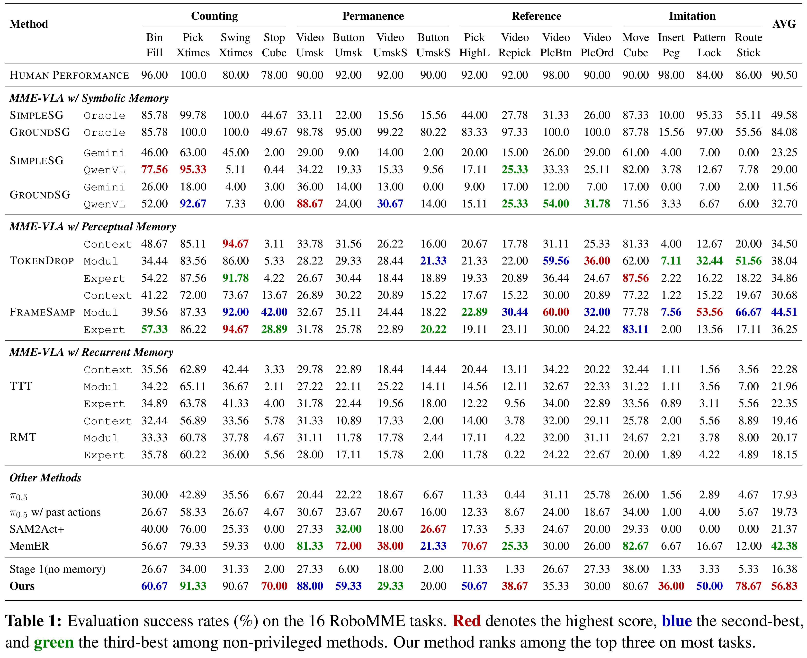
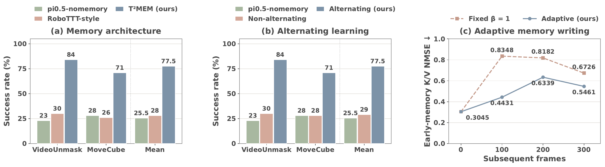
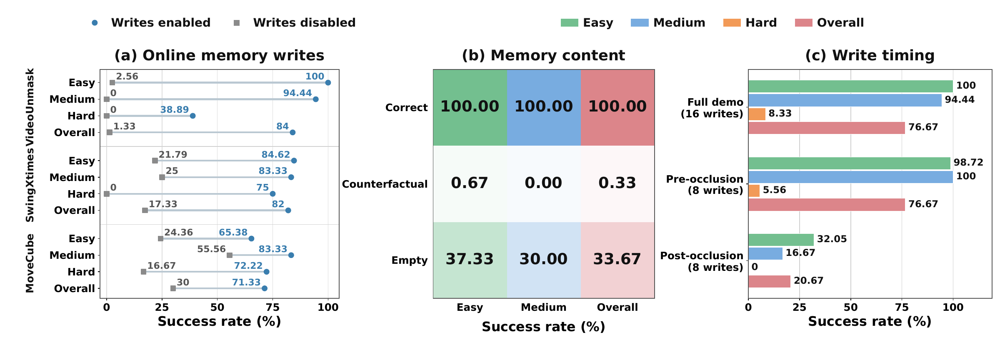
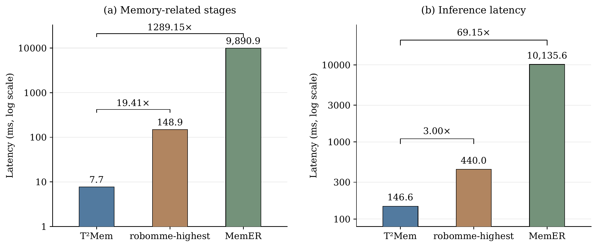

Grounded in observations
Memory writes come from visual-language observations.
Learning Test-Time Memory for Robotics
Recall a hidden object.
Count repeated actions.
Recall a demonstrated sequence.
Task demonstrations from RoboMME. Red border: demonstration phase.
Mean success on RoboMME
Over the memory-free π0.5 baseline
Across four memory categories
Memory-dependent robotic manipulation requires policies to use information that is no longer available in the current observation. Retaining history alone is insufficient: memory must preserve information that supports future actions. One challenge is whether a memory-free foundation model can learn to retain and use historical information from action demonstrations alone, without external memory support. We introduce T²Mem, a framework that develops this capability within a pretrained vision-language-action policy, without external reasoning models or memory-specific annotations. T²Mem uses test-time training to encode observation history into compact fast weights through online self-supervised updates, avoiding repeated processing of the full history. An observation-grounded interface extracts vision-language information for memory formation and supplies retrieved context to the action expert. Action supervision shapes what the memory learns to retain and use, while alternating memory-policy learning gives each component a fixed counterpart during optimization. Across 16 RoboMME tasks, T²Mem improves average success from 17.93% to 56.83% over the memory-free base policy and outperforms the recurrent-memory methods reported in the benchmark, while controlled profiling indicates at least 3x inference speedup over explicit methods.
Observe → read memory → act → update memory.
Illustrative features · Blue: observation · Violet: retrieved history · Orange: memory update
Memory writes come from visual-language observations.
Write strength adapts to new observations.
Fast weights update online and reset each episode.

As shown in the architecture figure(a), T²Mem builds on and comprises a VLM backbone, a memory module, and an AE. The memory sits between the VLM and AE. Its memory interface extracts vision-language features and combines them with retrieved history to condition the AE. This pathway complements the original VLM-to-AE connection, which preserves direct access to the current scene.
We distinguish slow parameters, learned across episodes, from fast state, updated within an episode. Slow parameters include the policy, interface, memory projections, fusion gates, and fast-weight initialization . They learn how to encode and use history, which responsible for "how to memorize" Fast state consists of the current weights and biases of the memory networks and carries episode-specific information, which is "what to memorize". Tasks share slow parameters, while each episode starts from with an independent fast state. During inference, all slow parameters remain fixed, while fast parameters undergo continuous self-supervised updates. During training, all parameters are unfrozen except those of the vision and language encoders.
The memory interface uses learned query tokens to aggregate VLM features into a compact state summary for memory writes, retrieval, and action conditioning (the architecture figure(b)). This leverages pretrained vision-language representations without updating memory over the full visual token sequence. At depth , interface representations extract information from vision-language features :
An attention mask restricts interface queries to valid vision-language keys, excluding action, proprioceptive, and other interface tokens while preserving the AE's original connections. This grounds memory in observations and blocks a direct action-history shortcut that could reduce imitation loss through action extrapolation rather than task-state tracking.
The summary supports both retrieval and writing (the architecture figure(c)). Omitting layer/head indices, normalization, and positional encoding, retrieval uses an observation-conditioned query:
where is the fast-weight memory and its history-conditioned readout. For writing, dedicated projections form key–value associations from the same summary:
At scheduled write steps, a self-supervised update encodes these associations into the fast weights:
where includes adaptive scaling (Adaptive Self-Supervised Memory). Reads precede writes, so new observations affect subsequent decisions. Memory projections , , and are separate from the interface attention projections and learned through the outer action objective; inner updates modify only episode-specific fast weights.
A channel-wise gate fuses retrieved history with the current vision-language summary:
Residual and feed-forward transformations then produce . Following RoboTTT , the gate initially limits memory's contribution to protect pretrained visuomotor capabilities; action supervision learns its channel-wise fusion strengths.
The enriched interface supplies keys and values to subsequent action-token attention, alongside current vision-language features, proprioception, and action context. An interface update is consumed after its layer, not by that layer's completed attention computation. The AE thus combines VLM perception and retrieved history to predict actions.
Read with a forward pass. Write with a self-supervised gradient.
Schematic network and feature colors. Read → Write → Repeat · Only fast weights update during inference.
TTT updates a model at inference using a self-supervised objective constructed from its inputs. In the fast-weight formulation, a neural model encodes episode history in its parameters . Given an input representation , slow parameters produce queries, keys, and values . A standard associative objective is
with memory readout and update
The action policy is conditioned on the readout, . We adopt a read-before-write convention with inner-loop step size ; setting skips a write. The slow parameters and initialization are learned through the outer action objective. At deployment, remains fixed, while fast weights update without expert action labels and reset to at each episode boundary.
Fast memory encodes history in an online-updated nonlinear mapping (the architecture figure(c)). The observation-grounded interface provides queries, keys, and values for retrieval and self-supervised association learning. This update requires no memory-content labels. The initialization, projections, and step-size parameters are learned through outer action supervision and fixed at deployment.
To limit repeated reinforcement from correlated observations, we adapt write strength using the alignment between the descent direction and , together with the normalized reconstruction residual. These signals determine a scale that attenuates aligned updates while preserving stronger updates for less aligned, poorly reconstructed inputs:
where is the binary write mask and is a curvature-calibrated step size with a learned positive multiplier. The non-adaptive control fixes without changing the step-size rule.
Reads precede writes, so each update affects only subsequent predictions. The fixed-size fast state avoids a growing history buffer. Architecture, scaling, and gradient details are provided in Adaptive Memory in the paper appendix; training and inference procedures appear in Training Details in the paper appendix.
Learn what to remember. Then learn how to use it.
Blue: slow-parameter learning · Orange: episode-local fast-weight updates
Self-supervised association learning does not by itself ensure decision-relevant memory, and the policy must learn to use the new historical representations. In joint training, memory updates change the context presented to the policy, while policy updates change the action gradients that guide memory learning. The two modules may therefore continually adapt to each other's changing representations, making a stable memory-to-action mapping harder to learn. We address this coupling by alternating their updates, holding one slow-parameter group fixed while optimizing the other. The animation above outlines the training stages, which is, learning to remember and learning to act are separate.
Initialization and memory-free adaptation. We initialize from pretrained (Stage 0) and adapt the policy without memory (Stage 1). This establishes task-specific visuomotor skills before introducing the memory pathway.
Stage 2A: memory learning. We fix the VLM/AE and train the memory mechanism to extract, store, and retrieve history useful for action prediction. Expert action supervision passes through the frozen AE to shape both current retrieval and earlier memory writes. The fixed policy provides a stable decision-making counterpart, encouraging memory representations that serve its control needs.
Stage 2B: memory-conditioned policy learning. We fix the memory mechanism and adapt the policy to combine current observations with retrieved history. This phase adjusts both the vision-language features supplied to memory and their use by the AE. Only memory slow parameters are frozen: episode-specific fast states continue to accumulate observations through online updates.
Alternating schedule. We repeat these phases so that memory adapts to the current policy, the policy learns to use the resulting representations, and subsequent memory learning responds to the updated policy. This repeated adaptation differs from training memory once and then fitting a policy to it. Both phases use expert action supervision without memory-content or task-progress labels. The action objective, parameter groups, sequence supervision, and training schedule are detailed in Training Details in the paper appendix.

We first examine whether T²Mem enables effective control on memory-dependent tasks. The table above summarizes the RoboMME evaluation (including no memory baseline). Among methods without privileged information, T²Mem ranks within the top three on most reported tasks, with the highest success rates on VideoRepick, InsertPeg, and RouteStick. It also substantially improves over the memory-free and the evaluated recurrent-memory baselines.
Performance is strongest on tasks that primarily require direct retrieval of an earlier cue or tracking repeated events, such as VideoUnmask and StopCube. In contrast, success remains lower on VideoUnmaskSwap and ButtonUnmaskSwap, where the policy must track swaps and update object–location associations rather than simply recall a stored binding. This contrast suggests a distinction between retaining information and reasoning over it. As a single-model approach, T²Mem relies on the underlying policy for visual feature extraction and temporal reasoning, without an external reasoning model. Its memory supplies historical evidence but does not, by itself, confer the ability to infer how that evidence changes through subsequent events. The weaker swap performance may therefore reflect limitations in the base policy()'s temporal reasoning, which improved memory retention alone cannot resolve.
Low-level control imposes a separate limitation on tasks such as InsertPeg. Our qualitative observations on InsertPeg indicate that the policy can identify and approach the intended target yet fail during the final insertion. Thus, terminal success reflects both memory-dependent decision-making and execution precision. The strong relative improvement on InsertPeg, despite its modest absolute success rate, highlights the importance of distinguishing these failure sources.

Observation-grounded memory architecture. The comparison places memory either in our observation-grounded interface or within the action expert, where reads and writes derive from action-expert representations. T²Mem achieves 84% and 71% success on VideoUnmask and MoveCube, compared with 30% and 26% for the action-expert-side implementation. This supports using semantic vision-language features to form memory for these tasks.
Alternating memory and policy learning. The ablation models are trained independently on each task with identical data, batch size, and initialization. Under the same training budget, jointly updating memory and policy performs similarly to the memory-free baseline. Alternation holds one component fixed while the other adapts, giving memory learning and memory-conditioned control a stable counterpart.
Preserving earlier associations. Starting from shared visible-demonstration memory, the adaptive-writing experiment replays 300 subsequent real frames across 20 long VideoUnmask Hard episodes. Architecture, write cadence, and step-size normalization remain unchanged. Adaptive writing lowers reconstruction error on the initial K/V bindings by 18.8%–46.9%, supporting reduced interference with earlier memory.
Same scene. Different histories. Different choices.
VideoUnmask · counterfactual expert demonstrations
Same instruction: “Watch the video carefully, then pick up the container hiding the blue cube.” The container layout stays fixed; the earlier color locations change, so the robot must grasp a different container. Both clips include the full grasp.
Expert demonstrations illustrating the counterfactual task, not T²Mem policy rollouts.
Same-scene color-permutation pair 0, seed 910000. Validation confirms identical container positions and orientations, the same instruction, swapped color positions, and different expert targets. Front and wrist views are shown side by side; every original frame is retained. Pair metadata.
True target: A
Correct: use memory built from this episode’s own demonstration.
Schematic illustration: A / B / C denote possible targets, not labels supplied to the policy. Choices are schematic, not recorded trajectories; random choices do not represent measured policy probabilities.
50 counterfactual pairs × both directions × 3 seeds. Instruction, environment goal and diffusion seed stay fixed.
300 / 300 successful trials

Online updates are necessary. Disabling episode-local fast-weight writes retains memory reads and the learned initialization, yet reduces success by 82.67 percentage points on VideoUnmask, 64.67 on SwingXtimes, and 41.33 on MoveCube. The fixed policy and initial memory alone cannot sustain normal performance.
The policy uses the content of history. For 50 counterfactual VideoUnmask pairs, the instruction, environment goal, and diffusion seed remain fixed while memory is replaced. Across both pairing directions and three seeds, correct, conflicting, and empty memories yield 300/300, 1/300, and 101/300 successes. Conflicting history is more damaging than empty memory, supporting content-specific use of the stored information.
Useful writes occur while the cue is visible. With equal budgets of eight writes, pre-occlusion memory achieves 76.67% success, versus 20.67% after occlusion. Eight pre-occlusion writes also match all 16 demonstration writes. This localizes decision-relevant evidence to the interval when the target remains visible.

Compact history enables faster decisions. T²Mem stores and retrieves history in latent fast weights within a single model. It avoids repeatedly processing the full history and does not invoke an external autoregressive reasoning model. Under the controlled workload, foreground computation is approximately 3.0× faster than FrameSamp+Modul and 69.2× faster than MemER.
Interpreting the timing. The left panel isolates memory-stage computation; the right includes the full profiled inference computation. Measurements use synchronized, warmed-up execution on RTX A5000 GPUs at batch size one. They exclude initialization, compilation, communication, and environment execution, so the comparison measures model computation rather than the duration of a complete robot episode.